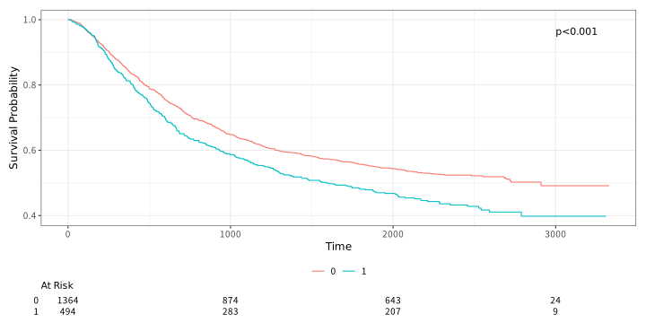
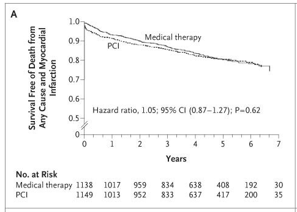
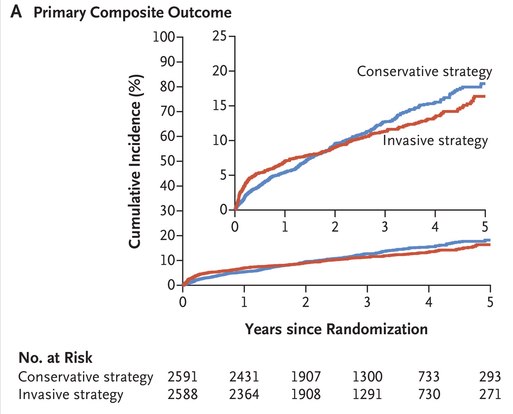
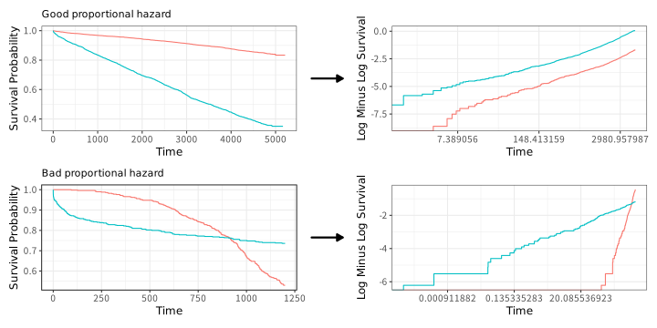
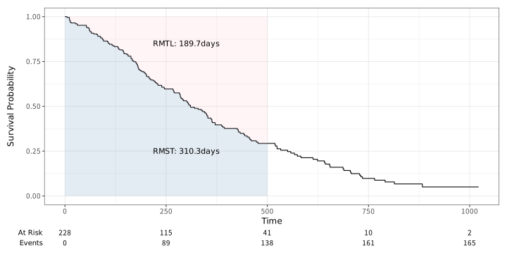
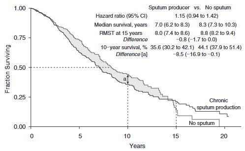
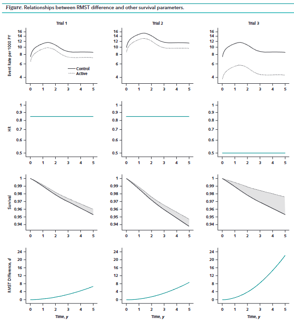
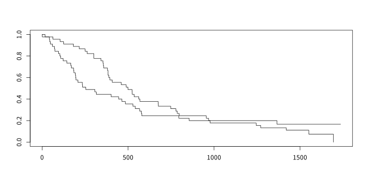

![]()
Parameter | Coefficient | 95% CI | p
--------------------------------------------------
surg | 1.25 | [1.08, 1.44] | 0.003
rx [Lev] | 1.00 | [0.86, 1.17] | 0.949
rx [Lev+5FU] | 0.66 | [0.56, 0.78] | < .001
sex | 0.93 | [0.82, 1.06] | 0.278
age | 1.00 | [0.99, 1.00] | 0.750
obstruct | 1.25 | [1.07, 1.47] | 0.006
differ | 1.37 | [1.20, 1.57] | < .001RMSTに関してあるいは、Cox回帰の限界
Beyond 比例ハザード性
2020-04-01
RMSTに関してあるいは、Cox回帰の限界
2020/4 ＠Keio University
新美 望
ある日のこと
今日の内容
- 復習：生存解析
- Cox hazardの限界
- RMSTとは？
- RMSTは何がいいの？限界は？
- RMSTの使い方
- 観察研究での使い道
速習：生存解析
速習：生存解析
- 時間および、打ち切り(censor)が存在するイベントの有無の解析方法の総称(別名 time-to-event analysis)
- 生存時間およびイベントの発症率の推定にKaplan-Meier法
- 単純な比較にLog-rank検定
- 影響の大きさの定量化や多変量調整にCoxハザードモデル
- 医学解析で最も多いと言っても過言ではない

Cox回帰について
Cox回帰について
- イベント発生のハザード比率が常に等しいという仮定のSemiparametricな解析
- 大元の生存曲線の形はどうでも良い(non parametric)
- 各々の共変量(下の式だとx1, x2…)の有無で瞬間の死亡率（hazard比）が変化する(parametric)
\(h(t) = h_0exp\{b_1x_1 + b_2x_2 + ...b_px_p\}\)
Cox Modelの限界
- 共変量が時間に関わらずに同じように影響するという仮定が必要
- 他にも、比例ハザード性がないといけない
- Log-log plotなどで確認する
- 結果の言語化が実は難しい (Dumas and Stensrud 2025)
- 例：REAL-CAD study
- 高容量のピタバスタチンを内服すると、MACEがHR 0.8に減りました
- 患者さんにHR 0.8をどう説明しますか？
本当ならダメな形！！


- COURAGE trialとISCHEMIA trialのKaplan-Meier曲線(Boden et al. 2007; Maron et al. 2020)
- 手技やOpeのtrialはこうなりがち
Log-log Plot

- 横軸が時間、縦軸が
log{-log(S(t))}のグラフ - これが平行の時には比例hazard性が保たれていると判断
- わかりやすいのは元の曲線が交わっているか否か
小括
- 生存分析(time-to-event analysis)において、ある治療効果を定量的にみたい時にCox回帰が主流である
- しかし、Cox回帰には複数の弱点がある
- Hazard ratioの数値の解釈が難しい
- 比例ハザード性が保たれない時に回帰が行えない
- どうやって解決すればいい？
RMSTとは

- Restricted Mean Survival Timeの略
- ある特定の時間（τ）までの生存曲線の下の面積を計測したもの
- 全時間を積分すると平均生存時間になる
- τまでの生存曲線の上の面積を計測したものはRestricted mean time loss(RMTL)
- 近年、がん領域の研究でよく使われるようになっている
RMSTを用いた群間比較
\[\mu_\tau = \int_0^\tau S(t)\,\mathrm{d}t\]
とした時に 1. RMSTの差 \[\mu_\tau(1) - \mu_\tau(0)\]
- RMSTの比率(Ratio)
\[\mu_\tau(1) / \mu_\tau(0)\]
- RMTLの比率(Ratio)
\[\{\tau - \mu_\tau(1)\} / \{\tau - \mu_\tau(0)\}\]
τまでの時間の平均値
比較には各々の治療群のRMSTの差や比をとる事が可能
多変量回帰として種々の因子の調整も可能
RMSTの差の直観的理解

- この差の面積を考えてよい
- 途中で交差するとその分を引き算する
HRとRMSTの関係

今日の内容
- 復習：生存解析
- Cox hazardの限界
- RMSTとは？
- RMSTは何がいいの？限界は？
- RMSTの使い方
- 観察研究での使い道
RMSTは何がいいの？限界は？
- RMSTでは、複数の異なる研究の比較の時にフォローアップ時間が違っていても比較が可能とされる
- 臨床的解釈として「ある時間まで追跡した時の平均生存時間」という風に解釈が可能
- 例：薬を飲むと、10年後には1年間の寿命伸延効果があります
- 一番の注意点は、特定の時間τを臨床的に意味がある数字にする事
- τが決められない時は長めの時間をとるのがベター
ハザードとの比較
| RMSTの差 | Hazard ratio | |
|---|---|---|
| 評価するもの | 境界時間(τ)内で、平均生存時間がどの程度延長するか | リスクがどれほど減るか |
| メリット |
|
|
| デメリット |
|
|
評価指標の比較
| 評価指標 | 時間 | 意味 | 利点 | 欠点 | 特に適した状況 |
|---|---|---|---|---|---|
| HR | フォロー期間全部 | ある瞬間でのRiskの変化率の比率 | フォロー期間全部の情報を使える | 直観的理解が困難 発症率が低いと広いCIになる |
研究：比例ハザードがある状況（非劣勢以外） |
| ARR | ある特定の期間 | ある瞬間でのEvent freeの絶対差 | KM曲線から計算可能 | KM曲線の形の差を捉えられない | 研究と臨床：治療のインパクトの説明 |
| NNT | ある特定の期間 | 1 / ARR |
KM曲線から計算可能 | 患者への説明が困難 KM曲線の形の差を捉えられない |
研究：介入の効果や有害事象への説明 |
| 中央生存時間の差 | 各々のグループである一点 | 各グループで生存率が50%になる時間の差 | KM曲線から計算可能 Robust |
Sample sizeやイベント率が低いと計算不可能 | 研究：大規模研究や長期の研究、高いイベント率の研究 |
| RMST | ある特定の期間 | ある期間における平均イベントフリーの延長効果 | 直観的 非劣勢試験でも狭いCIで計算できる |
決めた期間より先について解釈できない KM曲線の形の差を捉えられない |
研究と臨床：治療のインパクトの説明 |
胃がんデータの生存曲線

τ決定の重要性
km = transpose(km_data)
stats = transpose(rmst_data)
positive = "#0072B2"
negative = "#D55E00"
fmt = (x, digits = 2) => Number(x).toFixed(digits)
fmtP = p => p < 0.001 ? "< 0.001" : p.toFixed(3)
// KM曲線の各水平区間
intervals = km.slice(0, -1).map((d, i) => ({
start: d.time,
end: km[i + 1].time,
s0: d.s0,
s1: d.s1
}))current = stats.find(d => d.tau === tau)
// τをまたぐ最後の区間はτで切る
area = intervals
.filter(d => d.start < tau)
.map(d => ({
...d,
end: Math.min(d.end, tau)
}))
kmPlot = Plot.plot({
width: 640,
height: 350,
marginLeft: 65,
marginBottom: 50,
x: {
domain: [0, 2000],
label: "時間（日）"
},
y: {
domain: [0, 1],
label: "生存確率",
grid: true
},
marks: [
// 正の面積：放射線併用群の生存率が高い区間
Plot.rect(area.filter(d => d.s1 > d.s0), {
x1: "start", x2: "end",
y1: "s0", y2: "s1",
fill: positive,
fillOpacity: 0.35
}),
// 負の面積：放射線併用群の生存率が低い区間
Plot.rect(area.filter(d => d.s1 < d.s0), {
x1: "start", x2: "end",
y1: "s1", y2: "s0",
fill: negative,
fillOpacity: 0.35
}),
// KM曲線は右連続の階段関数として描く
Plot.line(km, {
x: "time",
y: "s0",
curve: "step-after",
stroke: "#333333",
strokeWidth: 2
}),
Plot.line(km, {
x: "time",
y: "s1",
curve: "step-after",
stroke: "#009E73",
strokeWidth: 2,
strokeDasharray: "6,4"
}),
Plot.ruleX([tau], {
stroke: "#555",
strokeDasharray: "4,4"
})
]
})
diffPlot = Plot.plot({
width: 510,
height: 350,
marginLeft: 75,
marginBottom: 50,
x: {
domain: [500, 2000],
ticks: stats.map(d => d.tau),
label: "τ（日）"
},
y: {
domain: [
Math.min(0, ...stats.map(d => d.diff_lower_95)),
Math.max(0, ...stats.map(d => d.diff_upper_95))
],
label: "RMST差（日）：併用 − 単独",
grid: true
},
marks: [
Plot.ruleY([0], {
stroke: "#777",
strokeDasharray: "4,4"
}),
// 各τでの95%信頼区間
Plot.ruleX(stats, {
x: "tau",
y1: "diff_lower_95",
y2: "diff_upper_95",
stroke: "#bbb"
}),
// 250日刻みの推定値を結ぶ
Plot.line(stats, {
x: "tau",
y: "diff_est",
stroke: "#999"
}),
Plot.dot(stats.filter(d => d.diff_est >= 0), {
x: "tau", y: "diff_est",
fill: positive,
r: 4
}),
Plot.dot(stats.filter(d => d.diff_est < 0), {
x: "tau", y: "diff_est",
fill: negative,
r: 4
}),
Plot.ruleX([tau], {
stroke: "#555",
strokeDasharray: "4,4"
}),
Plot.dot([current], {
x: "tau",
y: "diff_est",
fill: current.diff_est >= 0 ? positive : negative,
stroke: "black",
r: 8
})
]
})html`
<div style="display:grid; grid-template-columns:minmax(0, 640fr) minmax(0, 510fr); gap:16px;">
<div>
<div style="font-size:20px;">
<span style="color:#333;">━ 化学療法単独</span>
／
<span style="color:#009E73;">┄ 放射線併用</span>
</div>
${kmPlot}
</div>
<div>
<div style="font-size:20px;">RMST差と95%信頼区間</div>
${diffPlot}
</div>
</div>
<div style="font-size:20px;">
τまでの
<span style="color:${positive};">青い面積</span>
−
<span style="color:${negative};">赤い面積</span>
＝ RMST差
</div>
`html`
<table style="width:100%; font-size:24px; margin-top:16px;">
<thead>
<tr>
<th>τ = ${tau} 日</th>
<th>推定値</th>
<th>95%信頼区間</th>
<th>p値</th>
</tr>
</thead>
<tbody>
<tr>
<td>RMST差：併用 − 単独（日）</td>
<td style=${`color:${
current.diff_est >= 0 ? positive : negative
}; font-weight:bold;`}>
${fmt(current.diff_est)}
</td>
<td>${fmt(current.diff_lower_95)} ～ ${fmt(current.diff_upper_95)}</td>
<td>${fmtP(current.diff_p)}</td>
</tr>
<tr>
<td>RMST比：併用 / 単独</td>
<td>${fmt(current.ratio_est, 3)}</td>
<td>
${fmt(current.ratio_lower_95, 3)} ～
${fmt(current.ratio_upper_95, 3)}
</td>
<td>${fmtP(current.ratio_p)}</td>
</tr>
</tbody>
</table>
`τの決め方～ISCHEMIAの場合
- ICTUS, FRISC-II, RITA-3などの過去のRCTのメタアナライシスに準じて5年という時間を決めている
- 5年restricted mean event-free timeの差は、invasive strategy群で9.5日長い
- 95% CIは -17.8から36.9日
観察研究での使い道
- 回帰式を用いて、交絡因子を調整することも出来る
- Stroke. 2018;49:607-613.
- Propensity score match後に単変量でも可能
- Open Heart. 2020;7:e001163.
- 近年、Risk model作成も行われている
- Circ Cardiovasc Qual Outcomes. 2020;13:e005918.
AIMの締めの言葉
- RCTにおいて、ルーチンでRMSTの差を使う事を推奨する

ご静聴ありがとうございました
Boden, William E, Robert A O’Rourke, Koon K Teo, et al. 2007. “Optimal Medical Therapy with or Without PCI for Stable Coronary Disease.” The New England Journal of Medicine 356 (15): 1503–16. https://doi.org/10.1056/NEJMoa070829.
Dumas, Elise, and Mats J Stensrud. 2025. “How Hazard Ratios Can Mislead and Why It Matters in Practice.” European Journal of Epidemiology 40 (6): 603–9. https://doi.org/10.1007/s10654-025-01250-9.
Harhay, Michael O, Raphaël Porcher, Edward Cantu, et al. 2018. “An Alternative Approach for the Analysis of Time-to-Event and Survival Outcomes in Pulmonary Medicine.” American Journal of Respiratory and Critical Care Medicine 198 (5): 684–87. https://doi.org/10.1164/rccm.201801-0189LE.
Maron, David J, Judith S Hochman, Harmony R Reynolds, et al. 2020. “Initial Invasive or Conservative Strategy for Stable Coronary Disease.” The New England Journal of Medicine 382 (15): 1395–407. https://doi.org/10.1056/NEJMoa1915922.
Medicine · Statistics · Home